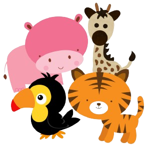

<ion-content [fullscreen]="true">
  <div id="container">

  

    <!-- Utiliza ngIf para mostrar diferentes estructuras según la orientación -->
    <ng-container *ngIf="orientation === 'landscape-primary' || orientation === 'landscape-secondary'; else portraitLayout">
      <br>
      <ion-grid fixed="true">
        <ion-row style="height: 120px;" >
          <ion-col *ngFor="let numero of numeros.slice(0, 6)" size="2" style="height: 100%;">
            
          </ion-col>
        </ion-row>
        <ion-row style="height: 120px;" >
          <ion-col *ngFor="let numero of numeros.slice(6, 10)" size="3" style="height: 100%;">
            
          </ion-col>
        </ion-row>
      </ion-grid>
    </ng-container>

    <ng-template #portraitLayout>
      <br><br><br>
      <ion-grid>
        <ion-row>
          <ion-col size="6" *ngFor="let numero of numeros">
            
          </ion-col>
        </ion-row>
      </ion-grid>
    </ng-template>

    <ion-fab slot="fixed" horizontal="end" vertical="bottom">
     
      <ion-fab-button color="dark">
        
      </ion-fab-button>
      <br>
      <ion-fab-button color="dark">
        
      </ion-fab-button>
      <br>
      <ion-fab-button color="warning">
        
      </ion-fab-button>
      
    </ion-fab>

   

  </div>
</ion-content>